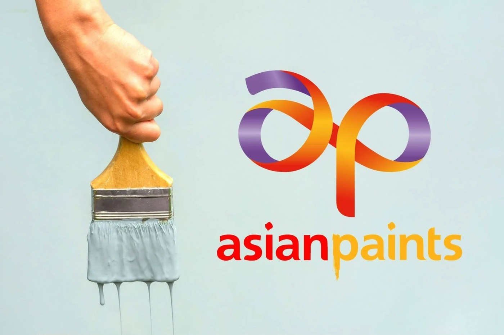
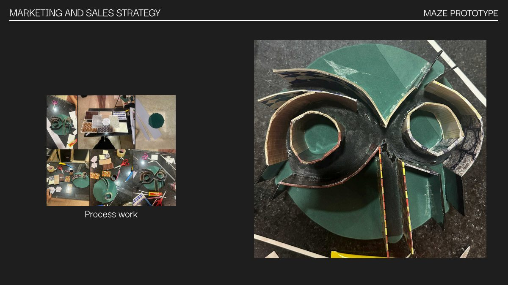
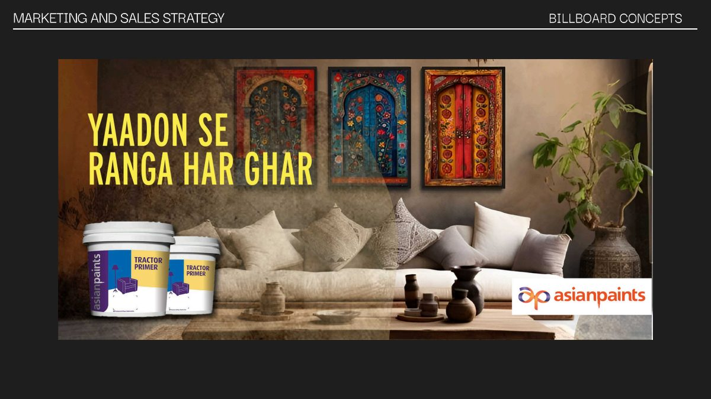

Asian Paints
Campaign & Experiential Design"Yaadon Se Ranga Har Ghar" — a home coloured by memories.
Asian Paints wanted a campaign that connected emotionally rather than just showing off colour cards. I conceived the Maze of Memories — a walk-through mall activation where every turn recreates a different era of the Indian home, down to period-accurate walls, textures, décor and music, before inviting visitors to reimagine their own home with Asian Paints. Deliverables spanned experience architecture, a working scale prototype, competitive positioning against Berger, Nerolac and Dulux, and OOH/billboard concepts designed for placement outside malls like Phoenix Palladium.
RoleCampaign concept, experience design, prototype build, billboard & poster design

